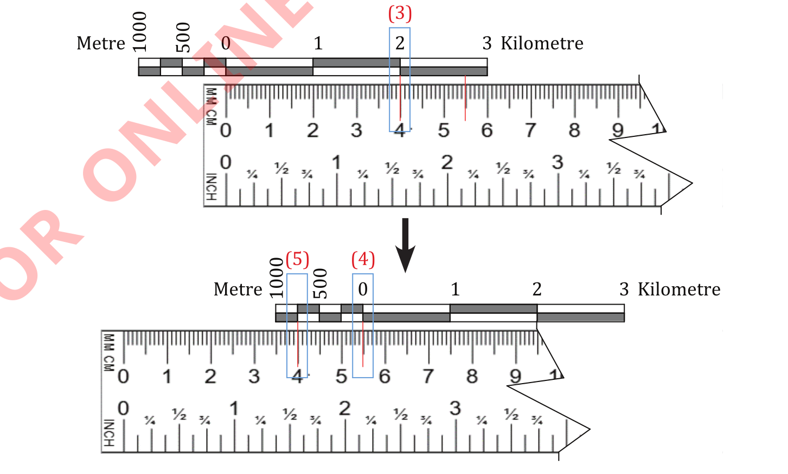

B can be converted into the ground distance using a linear or representative fractional scale, following these steps:
Place a ruler on the linear scale by aligning its zero (0) with a zero (0) on the linear scale, and the red mark on the right side;
if the red mark is aligned with a certain number, that number on a linear scale represents the ground distance between points A and B;
If the red mark is between two numbers, record the left number and mark its position on the ruler as presented in Figure 11. For example, the left number in Figure 11 is 2 km, then record it;
move the ruler to the left of a linear scale to align the right red mark with zero (4) (the left red mark will be on left side (5));
record the closest number to the left red mark. For example, in Figure 11, the recorded number is 750 metres. Therefore, the ground distance from point A to B is 2 km and 750 metres.

(d)By using a representative fractional (ratio) scale. Ground distances from point A to B can be calculated as in straight distances measured using a piece of paper. Since a map distance of 5.5 centimetres was measured in Figure 10, and the map scale is 1:50,000, the ground distance is 2.75 kilometres.